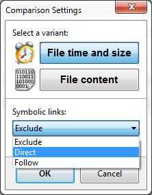

This variant considers two files with the same name as equal when modification time and file size match. The following cases are distinguished:
file exists on one side only
left only
right only
file exists on both sides
different date
left newer
right newer
same date
equal
conflict (same date, different size)
Two files with the same name are marked as equal if and only if they have the same content. This option is more useful for consistency checks rather than backup operations since it is naturally slower. The file modification time is not taken into account at all.
file exists on one side only
left only
right only
file exists on both sides
equal
different content
FreeFileSync offers three options to configure handling of symbolic links (also called symlinks or soft links):
Exclude:
Skip symbolic links while scanning
directories.
Direct:
Evaluate the symbolic link object
directly. Symbolic links will be shown as a separate entity on grid.
Links pointing to directories are not traversed and the link object
is copied directly during synchronization.
Follow: Treat symbolic links like the object they are pointing to. Links pointing to directories are traversed like ordinary directories and the target of each link is copied during synchronization.
Note Under
Windows the symbolic link options apply to all symbolic links,
"volume mount points" and "NTFS junction
points".
Copying symbolic links requires
administrator rights.